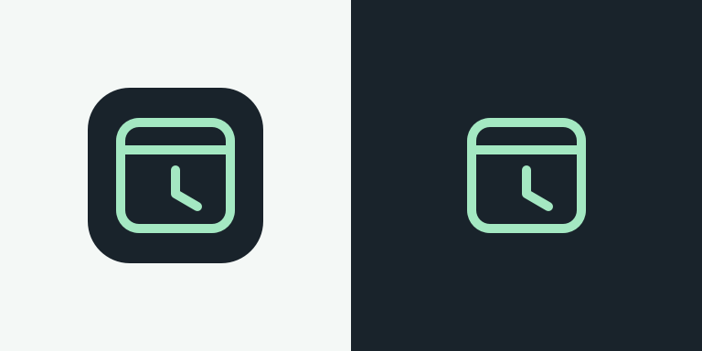
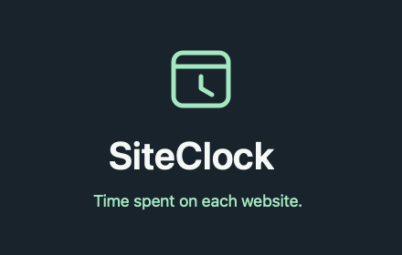
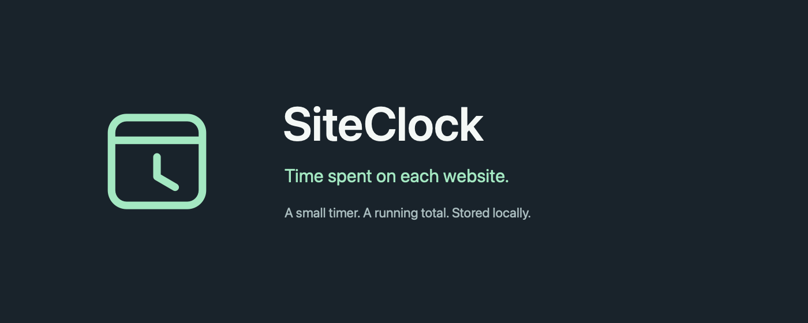
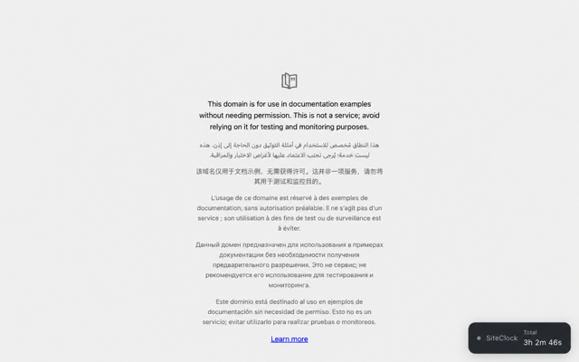

SiteClock
A minimal website timer. Here are the package, artwork, and store copy.
Icon & promotional artwork






Live screenshots
The installed extension on a neutral public page. These are genuine captures, not simulated product UI.



Copy & disclosures
Store listing
Chrome Web Store listing draft
Name
SiteClock
Short description
See today, last 7 days, and lifetime website usage. Optional cloud backup keeps your totals across computers.
Detailed description
SiteClock keeps a running total of the time you spend on each website and shows it in a small timer in the corner of the page.
The total carries across pages and visits. Open the toolbar popup to see your website totals, sorted by time spent.
- Counts the selected tab in the focused Chrome window.
- Pauses when Chrome loses focus, your computer locks, or you have been inactive for 30 minutes.
- Shows Today, Last 7 days, and Total; lifetime totals persist across restarts.
- Uses local calendar dates. Earlier history appears in Total; daily history starts at upgrade.
- Works locally without an account. Optional Google sign-in and cloud backup combine your totals across computers. Backup is off by default per installation.
- Pause backup anytime, or separately delete cloud history. No ads or analytics.
- Groups pages by hostname, ignoring a leading www. Other subdomains are separate.
The first 30 minutes without input are counted before the inactivity pause. Incognito browsing is not tracked. Chrome's internal pages and other protected pages cannot show the timer. Sleep, delayed timers, and sudden shutdowns can cause small amounts of time to go uncounted.
Removing SiteClock from Chrome deletes its local data. Previously uploaded cloud totals can be restored by signing in and enabling backup again. Cloud deletion is a separate action in SiteClock settings.
Listing fields
- Category: Productivity (choose the corresponding category in the dashboard).
- Language: English.
- Homepage: https://github.com/raymondethan/siteclock
- Support: https://github.com/raymondethan/siteclock/issues
- Privacy policy: https://github.com/raymondethan/siteclock/blob/master/PRIVACY.md
- Price: Free.
Store images
- Store icon:
icons/icon-128.png. - Required small promotional tile:
store/assets/promo-small-440x280.png. - Optional marquee:
store/assets/promo-marquee-1400x560.png. - Screenshot files and their capture notes are described in
store/REVIEW.md.
Single purpose
Track cumulative active browsing time per website and display it in an on-page timer and a toolbar list of website totals.
Review testing instructions
Install SiteClock and open an ordinary HTTP or HTTPS website. A small timer appears at the bottom right. Spend a few seconds there, switch to a second website, and return: the first site's timer continues from its existing total. Open the SiteClock toolbar popup to see both totals. Switch to another app to pause counting. Restart Chrome and revisit the website to confirm its saved total remains. No login or test account is needed.
Cloud release verification
The release must be configured against the production AWS stack and published extension ID before upload. Test Google sign-in and opt-in backup with two Chrome profiles as described in ../backend/README.md. The unconfigured source build is local-only; do not advertise working cloud backup for that build.
Privacy policy
SiteClock Privacy Policy
Last updated: November 1, 2026
SiteClock measures cumulative active browsing time per website. It works locally without an account. Optional cloud backup lets you restore saved totals and see combined usage across computers. Cloud backup is off by default for each installation.
Information used
SiteClock uses the selected tab's URL to determine its hostname, such as example.com, and uses tab/window focus and Chrome's active, idle, and locked signals to decide when to count time. It does not record individual keystrokes, clicks, or mouse movements. Incognito browsing is not tracked.
Chrome may provide full URLs, titles, and other tab metadata in memory. SiteClock does not persist or upload URL paths, query strings, page titles, page contents, forms, passwords, or cookies. A leading www. is removed; other subdomains remain separate.
Local storage
Chrome extension-local storage holds hostname totals and daily usage counters labeled by local calendar date, accounting checkpoints, a random installation identifier, account-separated contributions and cached cloud totals, and backup preferences. Temporary browser-session state distinguishes worker restarts from browser restarts. The installation identifier is random, is not a hardware identifier, and is replaced when extension-local data is erased.
After sign-in, the extension also stores SiteClock authentication tokens locally to maintain your session. These tokens are restricted to trusted extension contexts; they are not exposed to website content scripts. People or software with access to your Chrome profile may be able to access local data. SiteClock does not add its own local encryption layer.
Accounts and optional cloud backup
You can choose Continue with Google to create or access your SiteClock account. Google handles your Google credentials; SiteClock never receives your Google password. Google and Amazon Cognito process the identity information needed for authentication, including your account identifier and email. SiteClock requests basic identity access, not access to Google browsing history.
Signing in alone does not enable usage backup. When you enable backup, SiteClock uploads existing unassigned hostname totals from this installation and subsequent cumulative usage. Previously assigned history stays separate between accounts. Your account stores each installation's hostname totals, daily counters labeled by local calendar date, and registration/sync timestamps, allowing contributions to be combined without duplicate counting.
Backup uses Amazon Web Services: Cognito for authentication, API Gateway and Lambda for authenticated requests, and DynamoDB for stored usage. The current development deployment region is US East (Ohio); production deployment configuration determines its region. Hosting providers necessarily process connection and authentication metadata needed to operate the service. Application logs exclude hostnames, usage payloads, tokens, and full URLs; configured operational logs expire after 14 days.
While backup is enabled, the extension normally uploads changes and refreshes totals about once a minute while Chrome runs, and at startup or when you open the popup. Timing is best-effort. Offline tracking continues locally; unsent changes upload when connectivity returns. A sudden failure or deletion of local storage before upload can lose recent unbacked-up time.
Daily dates reflect the local timezone on the computer when tracking occurs. Last 7 days means today and the preceding six calendar dates. Historical dates are not rewritten when you travel. Usage saved before daily tracking was introduced is included in lifetime totals only.
Your controls and retention
- With backup off, usage stays local. Signing in still communicates with Google and the account service for authentication.
- Pause cloud backup to stop usage uploads and downloads on this installation. Local tracking continues, and accumulated changes are included when you re-enable it. Existing cloud history is retained.
- Sign out to clear local credentials and the displayed cloud cache. This does not delete cloud history. Other installations continue according to their settings.
- Delete cloud history in SiteClock settings to delete usage across the account and pause backup. This keeps your sign-in account. Other installations detect the deletion when they next connect, pause, and cannot automatically restore the deleted contribution. Existing local contributions remain local; re-enabling starts a fresh cloud contribution.
- Deletion immediately makes the retired cloud history unavailable through the API. Physical record cleanup runs in retryable batches. Disaster-recovery copies can retain deleted information for up to seven days; recovery procedures preserve deletion decisions.
- Removing SiteClock or clearing its storage erases that installation's local data and identifier. Cloud data remains until you delete it through settings. Sign in and enable backup on another installation to restore previously uploaded totals.
- Disabling the extension stops tracking and keeps its local data. Hostname totals have no automatic expiration while retained locally or in an enabled cloud account.
Account identity remains after deleting cloud usage. To request deletion of the remaining SiteClock account identity, contact the developer using the support link below without posting private information. The settings deletion action is labeled Delete cloud history and does not claim to delete your Google or SiteClock sign-in identity.
Use and sharing
Information is used only to provide website timing, account authentication, backup, restoration, and synchronization. SiteClock does not sell data, use it for advertising, assess creditworthiness, or include third-party analytics. Google and AWS process information as required to provide the requested authentication and hosting services. Browsing information is not used for unrelated profiling.
SiteClock follows the Chrome Web Store User Data Policy, including its Limited Use requirements. All executable extension code is included in the package; remote services provide authentication and data, not downloaded executable code.
Policy changes and contact
Material changes to data handling will be reflected in this policy and its date. For support or account-deletion requests, use the SiteClock project support page. Issues are public; do not include browsing history, credentials, or other private information. Ask for a private contact method when needed.
Dashboard privacy answers
Chrome Web Store privacy fields — draft for review
These answers describe the current packaged extension. They are prepared for the publisher to review and enter in the developer dashboard; nothing is submitted. Use the exact field labels presented by the current dashboard.
Single purpose
Track cumulative active browsing time per website and display it in an on-page timer and a toolbar list of website totals.
Permission justifications
storage
Save hostname-to-duration totals and accounting checkpoints on this computer so totals persist across visits and browser restarts. Session storage distinguishes worker restarts from browser restarts. When explicitly enabled, sync cumulative hostname contributions and cache account-wide totals; store authentication tokens in trusted extension storage.
tabs
Identify the hostname of the selected tab and detect tab switches, navigation, and closures so elapsed time is assigned to the correct website. Full URLs and other browser-provided tab metadata are transient; only hostnames and accounting metadata are persisted.
idle
Pause timing when Chrome reports that the machine is locked or has received no user input for 30 minutes, and resume when it becomes active. SiteClock does not record individual keystrokes, mouse movements, or clicks.
alarms
Periodically reconcile the active window, selected tab, and idle state if an event was missed or the background worker restarted. This keeps the timer aligned with the current browser state.
Website access / content script matches
HTTP and HTTPS content scripts display the timer automatically on the websites the user visits and send periodic checkpoints to the background worker. Broad website access supports timing arbitrary websites, which is the extension's single purpose. The scripts do not inspect page text or form contents. No script runs in subframes; incognito tracking is disabled.
Remote code
No, this extension does not use remote code. All JavaScript, styles, and icons are included in the package. Configured AWS endpoints provide authentication and optional data backup. Google handles sign-in. No executable code is fetched remotely.
Data-type disclosures
Disclose local processing as well as transmission; do not claim that the extension handles no user data just because it has no server.
- Web history / web browsing activity: Yes. The extension processes tab URLs to identify hostnames and retains hostname totals and daily counters labeled by local calendar date locally and uploads them to AWS only when backup is enabled. It does not retain visited URL paths, query strings, or page titles.
- User activity: Yes. The extension measures active browsing duration and uses window focus and Chrome's active/idle/locked state. It does not log individual clicks, mouse movements, or keystrokes.
- Personally identifiable information: Yes, basic Google account identity and email for optional account sign-in.
- Authentication information: Yes, SiteClock access and refresh tokens. The extension never receives the Google password.
- Website content, messages, payment details, health data, and precise location are not intentionally accessed.
Limited Use certifications
The current implementation supports the following statements:
- Data is not sold. Google and AWS process data only for the requested sign-in and backup services.
- Data is used only for the stated website-timing purpose.
- Data is not used to assess creditworthiness or for lending.
- Browsing data is not used for advertising or unrelated profiling.
Privacy policy URL
Use https://github.com/raymondethan/siteclock/blob/master/PRIVACY.md. The same policy is available as a standalone HTML source in store/privacy-policy.html if a dedicated hosted page is wanted later.
References checked
- https://developer.chrome.com/docs/webstore/cws-dashboard-privacy
- https://developer.chrome.com/docs/webstore/program-policies/user-data-faq
- https://developer.chrome.com/docs/webstore/images
- https://developer.chrome.com/docs/webstore/prepare
identity
Open a user-initiated Google sign-in flow through Cognito and return securely to the extension. The extension uses authorization code + PKCE and does not request Google browsing-history access.
Configured host permissions
Access only the configured AWS API and Cognito origins from the background worker for sign-in, token refresh/revocation, and optional hostname-duration backup. The release configuration tool writes exact origins; no wildcard cloud hosts are needed.
Release controls
Backup defaults to off on each installation. Enabling includes existing unassigned totals with an explicit confirmation. Pausing stops usage uploads/downloads and preserves the cloud copy; deletion removes cloud history and prevents stale installations from re-uploading it automatically. Account identity remains after usage deletion. See the policy for retention and account identity deletion requests.
The ZIP contains only production files and PNG icons. The policy is hosted in the public repository. The store submission is pending; see SUBMISSION.md for account and dashboard steps.